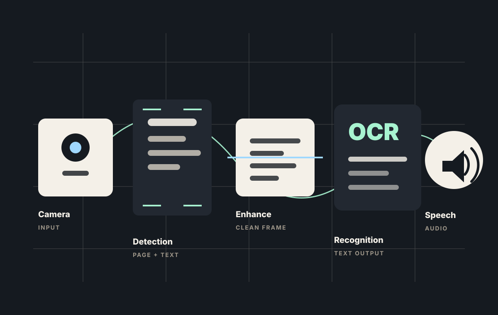
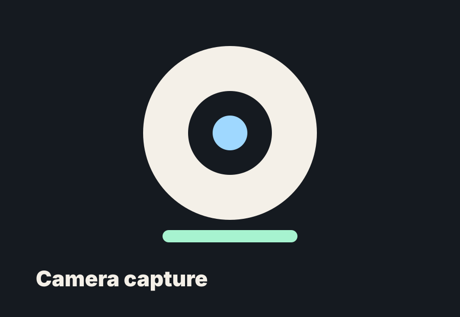
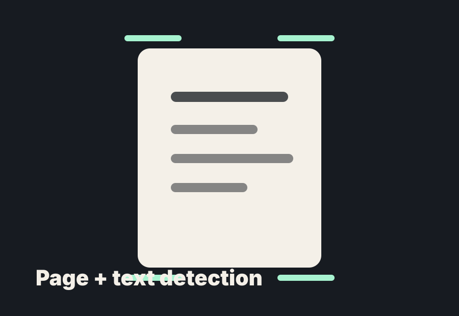
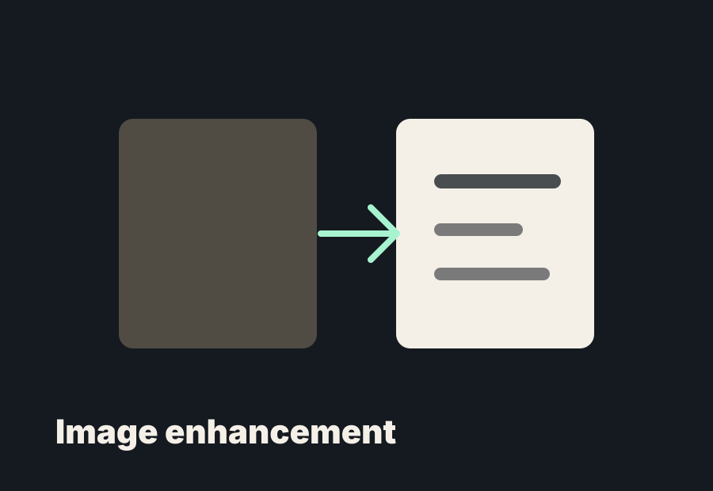
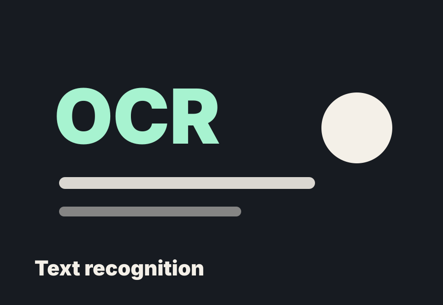
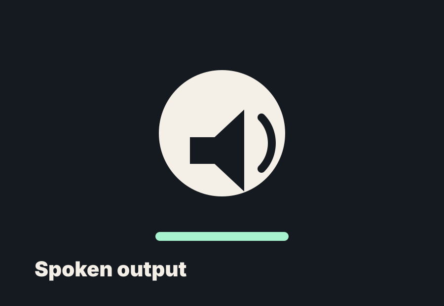
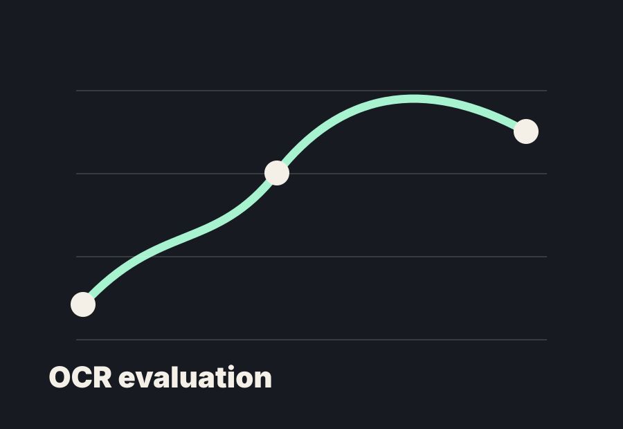

Assistive computer vision
Turning printed text into spoken access.
VisoraAI is a student-built camera reading prototype. It uses computer vision and OCR to find printed text, clean the camera frame, and read the result aloud.

A project framework instead of a one-page filler site.
The homepage now works like a portfolio index. Each system area is treated like a focused case study. Hover any item to reveal a prompt, then click for a deeper page.

Click for deeper analysisCamera capture
Live camera input for printed text in real-world conditions.

Click for deeper analysisPage + text detection
Locating the page and readable text region before OCR begins.

Click for deeper analysisEnhancement layer
Cleaning blur, glare, contrast, and frame quality before recognition.

Click for deeper analysisRecognition pipeline
Turning the enhanced crop into text with confidence-aware fallback logic.

Click for deeper analysisSpoken output
Reading detected text aloud so the screen is not the final interface.

Click for deeper analysisEvaluation direction
Testing OCR failure points such as motion blur, glare, and character error rate.
The best version of VisoraAI should feel like a real assistive technology case study, not a generic AI landing page.